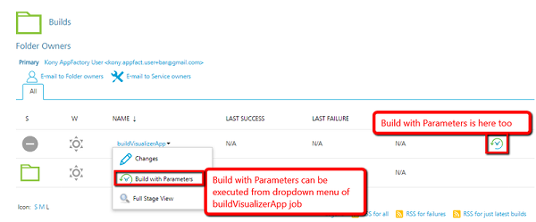

Building an Iris app
To build an Iris app, you need to run the buildIrisApp job from your project. To perform a build for the first time, you need to configure the build parameters for the job. For future builds, App Factory stores the settings from the previous build.
To run the buildIrisApp job, follow these steps.
-
From the folder of your App Factory project, navigate to Iris → Builds → buildIrisApp

-
Run the job by using the Build with parameters option. You can access the option by following either of these steps.
Note: If you don’t see the option, you might not have ownership permissions to the project. You can verify whether your name is listed in the Folder Owners section of the project. The Primary owner of the project can add users as secondary owners to grant permissions to the builds.
- On the right-side of the job row, select the icon that represents Build with Parameters
- Open the drop-down list for the buildIrisApp job, and then select Build with Parameters
- Open the buildIrisApp job and execute Build with Parameters action on the left panel of the job

-
Configure the build parameters for the job. For more information about the parameters, refer to the following sections.
Source Control related parameters
Parameter Description PROJECT_SOURCE_CODE_BRANCH Specifies the branch, release tag, or the commit ID of the repository that contains the source code of the Iris project. VoltMX Iris & Foundry related parameters
Parameter Description BUILD_MODE Specifies the mode in which the app is built. Contains the following options.
debug:Builds the app in debug mode, which adds debugging options in the app binary
test:Builds the app in test mode, which enables automated testing for the app
release:Builds the app in release mode (release-unprotected mode), which optimizes the app for execution.
The release mode does not provide additional security for the app
release-protected:Builds the app in a release-protected mode, which optimizes the app for execution and also provides extra security with encryption keys.
Important: For the release and release-protected build modes, you need to set the Android KeyStore options. For more information, refer to Android related parameters.
For the release-protected build mode, you need to configure the Web protection related parameters. For more information, refer to Desktop Web related parameters.Note: In debug mode, the landing screen of the app is the Volt MX debugger screen. Make sure that your test scripts are prepared to navigate away from this screen.
For the release-protected mode, the encryption keys are the values that you configure in Iris. The keys are configured in Project Settings → Native → iPhone/iPad/Watch or Android → Protected Mode.FOUNDRY_CREDENTIALS_ID Specifies the Volt MX Cloud credentials that App Factory uses to build the Iris project and publish any linked services. If you are building an app for the Web channel, the credentials are used to upload the WAR files to Volt MX Foundry and to publish the app. FOUNDRY_APP_CONFIG Specifies the configuration details of the Foundry app, such as app name, account ID, console URL, and identity server URL. For more information, refer to Adding Volt MX Foundry App Configuration.
If your app does not contain any integration with Foundry, you can skip this build parameter.Protected Build parameters
Important: To use protected keys for your app, you need to add encryption keys to your project. For more information, refer to Adding Encryption Keys.
Parameter Description PROTECTED_KEYS Specifies the encryption keys that are used to provide additional security for the app. You can select the public key, private key, or fin key.This parameter is displayed only if the BUILD_MODE parameter is release-protected. Android related parameters
Parameter Description ANDROID Specifies whether the app must be built for the Android platform.If you select this check box, the Android related parameters appear. ANDROID_UNIVERSAL_NATIVE Specifies whether the app must be built as a universal Android app for both Mobile and Tablet channels.If you select this check box, you need to configure the following parameters.
ANDROID_UNIVERSAL_APP_ID: Specifies the unique ID of the app that identifies the app on the device, and on Google Play Store.
For example:com.foo.KitchenSink
Note: The app ID is the value that you enter in Iris in Project Settings → Native → Android → Package Name.
ANDROID_MOBILE_NATIVE Specifies whether the app must be built for the native Android platform for the Mobile channel.If you select this check box, you need to configure the following parameters.
ANDROID_MOBILE_APP_ID: Specifies the unique ID that identifies the app on the device, and on Google Play Store.
For example:com.foo.KitchenSink
Note: The app ID is the value that you enter in Iris in Project Settings → Native → Android → Package Name.
ANDROID_TABLET_NATIVE Specifies whether the app must be built for the native Android platform for the Tablet channel.
If you select this check box, you need to configure the following parameters.
ANDROID_TABLET_NATIVE: Specifies the unique ID that identifies the app on the device, and on Google Play Store.
For example:com.foo.KitchenSink
Note: The app ID is the value that you enter in Iris in Project Settings → Native → Android → Package Name.
ANDROID_APP_VERSION Specifies the version of the Android application. The version number is the value that you enter in Iris in Project Settings → Application → Version.
For example: 1.0.1ANDROID_VERSION_CODE Specifies the internal positive integer that is used to determine the recent versions, where a higher number indicates a more recent version.
The app internal version number is entered in Iris at Project Settings → Native → Android → Version Code.ANDROID_APP_BUNDLE Specifies whether the binary must be built in the Android App Bundle (AAB) format for submission to the Google Play Store. SUPPORT_X86_DEVICES Specifies whether the app binaries are built for devices that use the x86 architecture.
If you enable this parameter, the build notification email will contain ARM_64bit and x86_64 bit binaries.ANDROID_KEYSTORE_FILE Specifies the keystore file that is used to sign the Android binary. The supported file formats are .keystoreand.jks. For more information, refer to Android keystore system and Sign your app.
Note: If your build mode is debug, you can skip this parameter.
ANDROID_KEYSTORE_PASSWORD Specifies the password for the keystore file that is selected in the ANDROID_KEYSTORE_FILE parameter. For more information, refer to Android keystore system and Sign your app.
Note: If your build mode is debug, you can skip this parameter.
ANDROID_KEY_PASSWORD Specifies the password to the key that is used to sign-in to the Android library. For more information, refer to Android keystore system and Sign your app.
Note: If your build mode is debug, you can skip this parameter.
ANDROID_KEY_ALIAS Specifies the alias of the signing key in the keystore. For more information, refer to Android keystore system and Sign your app.
Note: If your build mode is debug, you can skip this parameter.
Apple related parameters
Important: Before you build the app or the artifacts for iOS, make sure that you register the App ID. For more information, refer to Register an App ID.
Make sure that the signing certificates and distribution profiles have not expired. Otherwise, the build fails and an error occurs.
Parameter Description IOS Specifies whether the app must be built for the iOS platform.If you select this check box, the Apple related parameters appear.
Important: Make sure that you register the App ID before you build the app or the artifacts for iOS. For more information, refer to Register an App ID.
SIGNING_METHOD Specifies the mode of signing for the iOS binary ( .ipa). Contains the following options:
.Apple-AccountManual-Certificates
Note: Among the APPLE_ID or APPLE_SIGNING_CERTIFICATES parameters, only one parameter is mandatory based on the SIGNING_METHOD.
APPLE_ID Specifies the credentials of the Apple developer account that is used to generate certificates for the iOS binary.This parameter is applicable only if the SIGNING_METHOD is Apple-Account.
For more information, refer to Apple Signing Certificates.APPLE_DEVELOPER_TEAM_ID Specifies the ID of the developer team that is building the app. This parameter is applicable only if your Apple ID is a part of multiple development teams. If your Apple ID is enrolled as an individual, you can skip this parameter.
For more information, refer to Locate your Team ID.
Note: If the first build of your project has a value for APPLE_DEVELOPER_TEAM_ID, you need to enter the value for this parameter in each build. If the parameter is empty for the first build of the project, it must remain empty for all the upcoming builds.
APPLE_SIGNING_CERTIFICATES Specifies the certificates that are used to sign the iOS binary (.ipa).
This parameter is applicable only if the SIGNING_METHOD is Manual-Certificates.
For more information, refer to Apple Signing Certificates.IOS_UNIVERSAL_NATIVE Specifies whether the app must be built as a universal iOS app for both Mobile and Tablet channels.
If you select this check box, you need to configure the following parameters.
IOS_UNIVERSAL_APP_ID: Specifies the unique ID of the app that identifies the app on the device, and is used by the operating system.
For example:com.foo.KitchenSink
Note:The app ID is the value that you enter in Iris in Project Settings → Native → iPhone/iPad/Watch → Bundle Identifier.
IOS_MOBILE_NATIVE Specifies whether the app must be built for the native iOS platform for the Mobile channel.
If you select this check box, you need to configure the following parameters.
IOS_MOBILE_APP_ID: Specifies the unique ID of the app that identifies the app on the device, and is used by the operating system.
For example:com.foo.KitchenSink
Note: The app ID is the value that you enter in Iris in Project Settings → Native → iPhone/iPad/Watch → Bundle Identifier.
IOS_MOBILE_NATIVE Specifies whether the app must be built for the native iOS platform for the Tablet channel.
If you select this check box, you need to configure the following parameters.IOS_TABLET_APP_ID : Specifies the unique ID of the app that identifies the app on the device, and is used by the operating system.
For example:com.foo.KitchenSink
Note: The app ID is the value that you enter in Iris in Project Settings → Native → iPhone/iPad/Watch → Bundle Identifier.
IOS_APP_VERSION Specifies the version of the iOS application. The version number is the value that you enter in Iris in Project Settings → Application → Version.
For example: 1.0.1IOS_BUNDLE_VERSION Specifies the version of the bundle that is used in the app. The bundle version is the value that you enter in Iris in Project Settings → Native → iPhone/iPad/Watch → Bundle Version.
For example: 1.0.1IOS_DISTRIBUTION_TYPE Specifies the type of distribution that is used for the app. For more information, refer to Preparing Your App for Distribution.
Contains the following options:
Development: Used if you want to build the app for testing or debugging
Adhoc: Used if you want to build the app for Quality Assurance or User Acceptance Testing
Enterprise: Used if you want to build and distribute your app internally and your company is enrolled in Apple's Developer Enterprise Program
App Store: Used if you want to build and release your app on the Apple App Store
If you are building your app to test using App Factory's DeviceFarm integration, you can select any of the above options.
Note: With Development and Adhoc distribution, you can install and run the app on devices that are registered in your Apple Developer account. With Adhoc, you can test the app by using the production level app services, such as Push Notifications.
For Enterprise and App Store distribution, you need to build the app in release mode.APPLE_WATCH_EXTENSION Specifies whether an app extension binary must be generated for the Apple Watch platform. This extension can only be built along with an iOS build. Responsive Web related parameters
Parameter Description RESPONSIVE_WEB Specifies whether the app must be built for the Responsive Web channel.If you select this check box, the Web related parameters appear. PUBLISH_WEB_APP Specifies whether the app must be published to the Foundry environment.
Note: If the app is built for both Desktop Web and SPA channels, a combined archive is generated and published to the specified Foundry environment.
WEB_APP_VERSION Specifies the version of the web app. The version number is the value that you enter in Iris in Project Settings → Application → Version.For example: 1.0.1 FORCE_WEB_APP_BUILD_COMPATABILITY_MODE Specifies whether the web app package must be built by using the WAR ( .war) extension. The version number is the value that you enter in Iris in Project Settings → Application → Force Web App Build Compatibility Mode.
Important: The ZIP extension (
.zip) is supported from V8 ServicePack 2 on Volt MX Cloud. If your app uses plugins from earlier versions, make sure that you select this check box.WAR (.war) extension is not supported with multi-tenant environments in Volt MX Foundry.Web protection parameters
The web protection parameters are displayed only if RESPONSIVE_WEB is enabled and the BUILD_MODE is release-protected.
Parameter Description OBFUSCATION_PROPERTIES Specifies the properties that are used to obfuscate the web app.
For information about adding these properties to App Factory, refer to Adding Secure JS Properties.
For information about obtaining the secure JS properties, refer to Implement Protected Mode Build for Web Applications.PROTECTION_LEVEL Specifies the level of protection that is used for the web app. Contains the following options:
.BASIC
.MODERATE
.CUSTOM
If you select CUSTOM, App Factory displays the CUSTOM_PROTECTION_PATH parameter.EXCLUDE_LIST_PATH Specifies the path to a list of files that must be excluded from the obfuscation. The path must be relative to the root of the repository.
For information about the exclusion list, refer to Implement Protected Mode Build for Web Applications.CUSTOM_PROTECTION_PATH Specifies the path to the custom protection configuration that you want to use for your web app. The path must be relative to the root of the repository.
For information about the configuring custom protection, refer to Implement Protected Mode Build for Web Applications.
Note: This parameter is displayed only if the PROTECTION_LEVEL parameter is set to CUSTOM.
Custom Hooks
Parameter Description RUN_CUSTOM_HOOKS Specifies whether Custom Hooks must be run as part of the build pipeline. If this parameter is disabled, App Factory does not run Custom Hooks in the build pipeline. Testing
Parameter Description TEST_FRAMEWORK Specifies which framework is used to test the app. Contains the following options:TestNGJasmine RUN_NATIVE_TESTS Specifies whether tests are run for the Native channel for the platforms. If you select this check box, the console displays additional parameters.This parameter is displayed only if the ANDROID or IOS parameters are enabled. TestNG related parameters
Parameter Description TEST_ENVIRONMENT Specifies the environment that is used to run the tests. Contains the following options:StandardCustom APPIUM_VERSION Specifies version of Appium that is used to run tests. This parameter is applicable for Custom test environments.For standard environments, new versions of Appium are installed as part of the AWS run.For information about supported versions of Appium on AWS DeviceFarm, refer Custom Test Environment Run.For information on artifacts available in the notification mail for AWS Custom Environment Run, refer Building an App in AWS Custom Environment. TESTNG_FILES Specifies the path of the TestNG files in the testing JAR file. This parameter is applicable for Custom test environments.The testng.xmlfile at the root of the JAR is selected by default.You can specify multiple file paths by separating them with a comma. For example:package/testng.XML, package/appfactory/testng.xml, testng.xmlAVAILABLE_TEST_POOLS Specifies the device pool that is used to test the app. You can select an available device pool from the drop-down list.For more information about device pools, refer to Configuring Device Pools. Jasmine related parameters
Parameter Description NATIVE_TEST_PLAN Specifies the relative path of the test plan that you want to run, for example: testRunner.js.This path is relative to the/testresources/Jasmine/Mobile/Test Plansfolder or the/testresources/Jasmine/Tablet/Test Plansfolder.If this parameter is empty, the default plan (testPlan.js) is selected.APPIUM_VERSION Specifies version of Appium that is used to run tests. This parameter is applicable for Custom test environments.For standard environments, new versions of Appium are installed as part of the AWS run.For information about supported versions of Appium on AWS DeviceFarm, refer Custom Test Environment Run.For information on artifacts available in the notification mail for AWS Custom Environment Run, refer Building an App in AWS Custom Environment. TESTNG_FILES Specifies the path of the TestNG files in the testing JAR file. This parameter is applicable for Custom test environments.The testng.xmlfile at the root of the JAR is selected by default.You can specify multiple file paths by separating them with a comma. For example:package/testng.XML, package/appfactory/testng.xml, testng.xmlWeb Testing related parameters
Important: Appium tests (for Jasmine testing) must be placed at the following path in your project:
/test/testNG
Selenium tests (DesktopWeb tests) must be placed at the following path in your project:/test/testNG/DesktopWeb Parameter Description RUN_DESKTOPWEB_TESTS Specifies whether. WEB_TEST_PLAN Specifies the relative path of the test plan that you want to run, for example: testRunner.js. This parameter is only applicable for the Jasmine test framework.This path is relative to the/testresources/Jasmine/Desktop/Test Plansfolder.If this parameter is empty, the default plan (testPlan.js) is selected.RUN_DESKTOPWEB_TESTS_ARGUMENTS Specifies whether arguments (parameters) can be passed in the Maven commands for the DesktopWeb tests.For example: The argument -Dsurefire.suiteXmlFiles=resources/Testng.xmltriggers the tests that are present in the resources/Testng.xml file.AVAILABLE_BROWSERS Specifies the browser that is used to run tests for DesktopWeb.
Note: App Factory only supports Google Chrome version 68.0.3419.0 for DesktopWeb testing.
SCREEN_RESOLUTION Specifies the screen resolution at which you want to run the tests. -
After you configure the parameters, click Build.
After App Factory completes the build, the recipients receive an email notification with the information about the build, such as the build status and artifacts. For more information, refer to Build Results Notification.